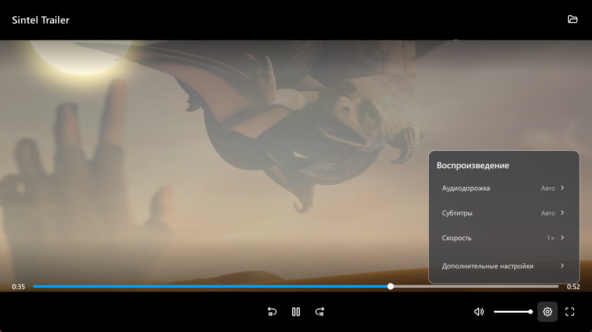

Adjust playback
Choose audio and subtitle tracks, change playback speed and adjust audio delay. Subtitle translation into English and Russian uses your Codex sign-in.
Open files and video streams in an mpv-based player. Use qplay on its own or to watch videos from qbutt and qcatch.
Linux x64 / WSL (Ubuntu 24.04+, glibc 2.39+)
curl -fsSL https://qbutt-org.github.io/qbutt/install.sh | sh -s -- qplay
Could not copy. Copy the selected command manually.

Choose audio and subtitle tracks, change playback speed and adjust audio delay. Subtitle translation into English and Russian uses your Codex sign-in.
Upscaling and frame generation depend on your GPU. Frame generation is available only on Windows; additional components download automatically.